Takeaways from a free 10-day trip to Saudi Arabia
Feb 2024
Womanhood
This February, I got to travel to Saudi Arabia on a fully-funded, 10-day trip through Gateway KSA, a program funded by the Saudi royalty aiming to show their country to exceptional future leaders at top Universities around the world.
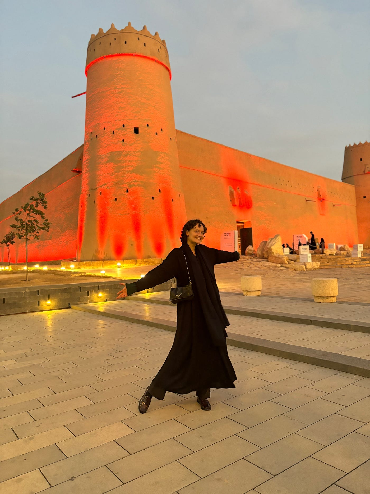
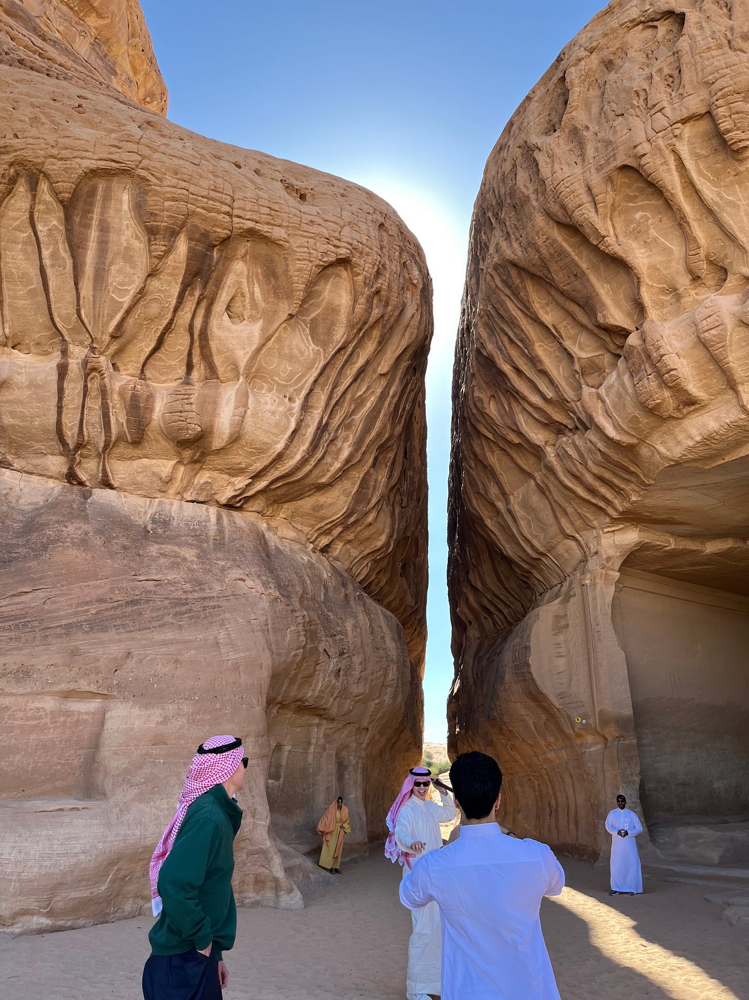
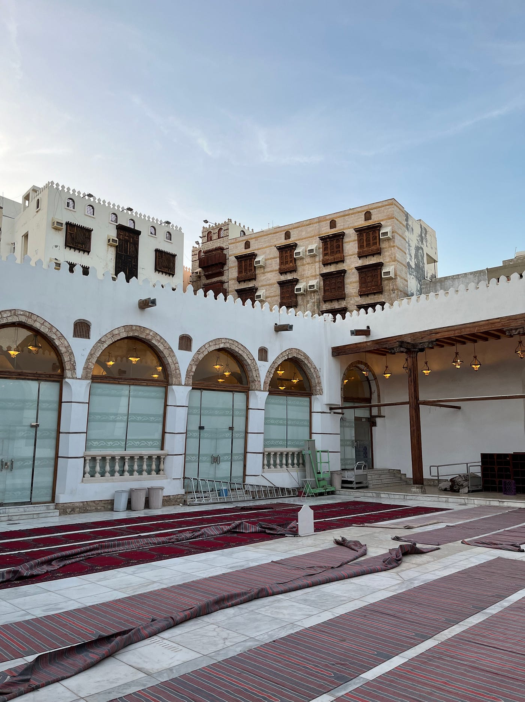
Although it was inconveniently during the middle of the semester, skipping school was 1000% worth it. As someone that’s learning Arabic, I wanted to understand a culture and value system I had never truly experienced before. Below are key takeaways around subjects that resulted in deep reflection.
Let’s start with what was immediately on my mind. Coming into the experience, I knew I would be exposed to a different view of womanhood. My initial impressions were negative: I couldn’t work out in the hotel gym at certain times and without covering most of my skin, women seemed to highly prioritize their makeup and name-brand purses, and overall came off as very reserved and quiet. I felt very out of place as someone obsessed with sports, unconcerned with superficiality and extremely… animated.
Over the next few days, what I learned about being a woman pushed me to think about it completely differently. First of all, it’s obvious that women here value modesty, but what this truly means is that because of their religion, it is their choice to act and dress the way they do. To them, wearing a hijab or abaya is a personal choice and is part of their identity, which, if taken away, would be like ripping off a part of themselves. I likened it to a way more meaningful version of how in the US, people wear clothing with branding of their educational institution or favorite sports team. It’s a sense of pride; a way to tell the world who you are.
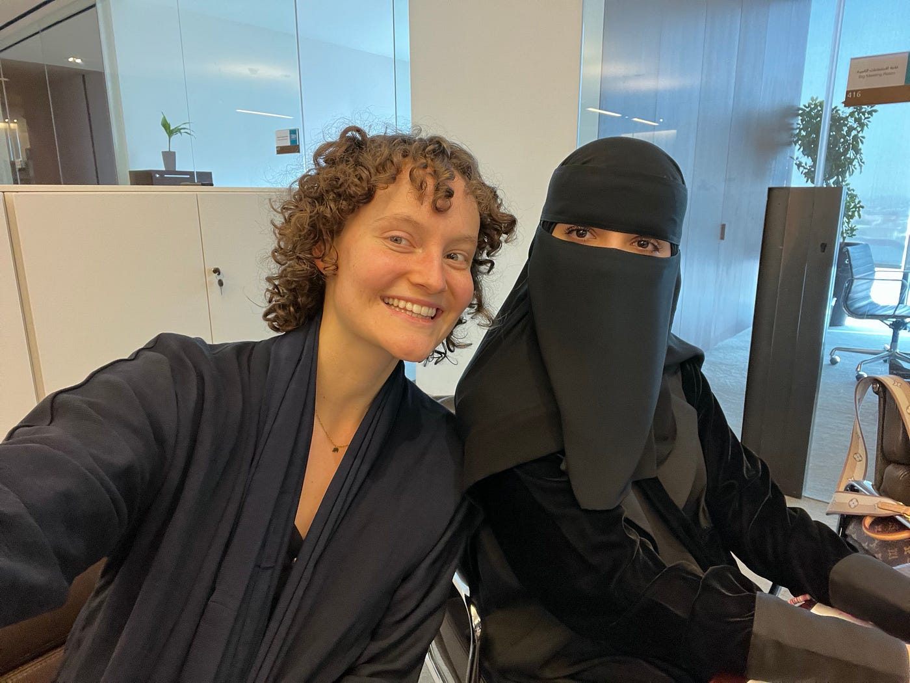
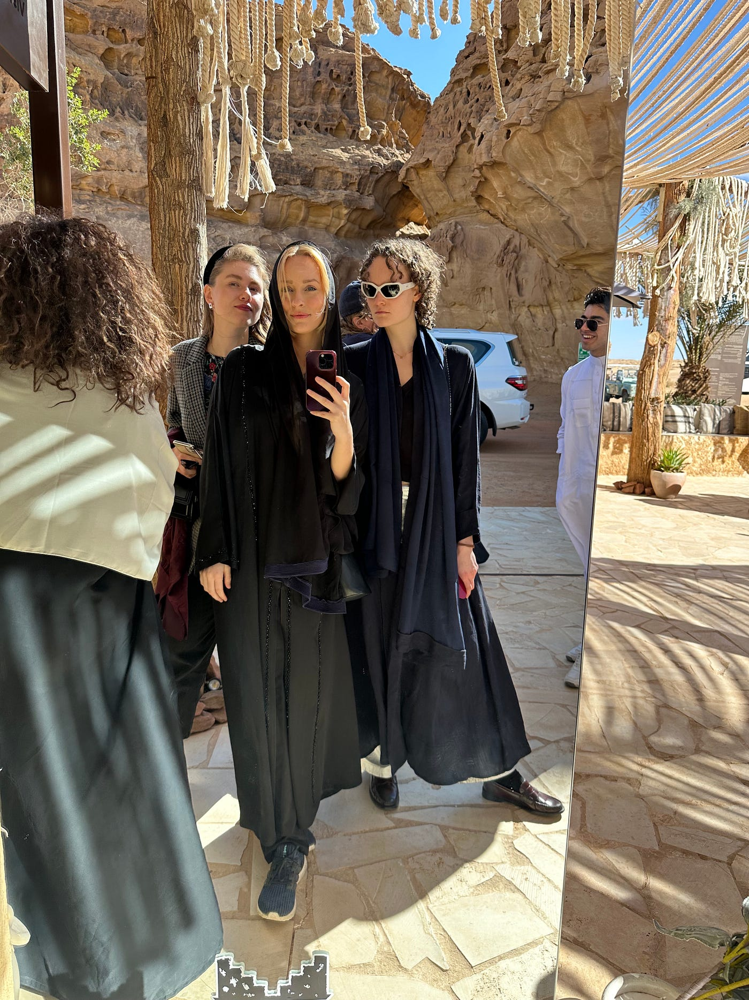
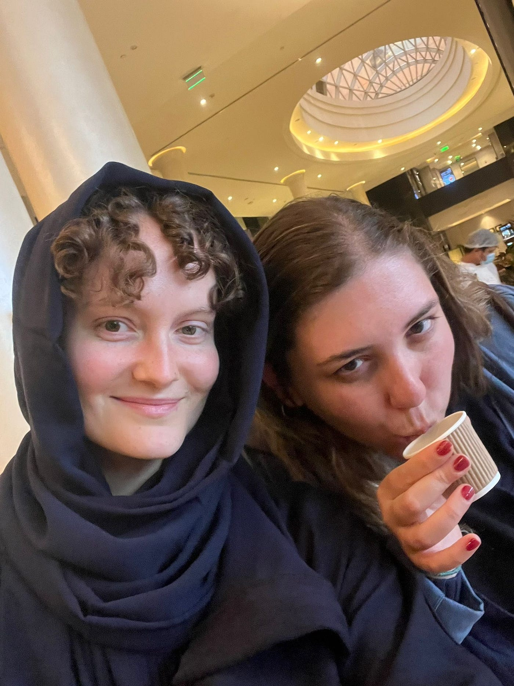
In this context, the emphasis on bags, earrings, etc. makes sense. Women like to customize their abayas and hijabs, but there is only so much you can play with there and it’s part of human nature to personalize how you look (although there is a bit of a “status symbol” when it comes to the designer handbags).
What really struck me about a woman’s position in society is that being a mother is considered the occupation of absolute highest respect. In Islam, the gate to heaven is under a mother’s feet. Motherhood is sacred, and being a mother is a choice that many women are proud to make, which I 100% respect. Raising a human means not just making sure that it’s fed, watered, and not broken, but molding a being that will have a massive impact on the world.
That is not to say that women don’t work. Many do, and hold high positions, and impact their fields, if that is what they choose.
Family
Mother comes first, wife comes second. Family is the center of Arabic culture. People live with their families until marriage, and it is considered a privilege to do so. Taking care of and respecting your elders is a matter of fact, as is having long lunches with your family on Fridays and Saturdays. This is beautiful.
Dating
Family, especially mothers, are often very involved in this process. A son or daughter will say they are ready to get married; their mother starts talking to other mothers and arranges a meeting with a potential match. They can meet multiple times, over the course of months, sometimes alone and sometimes with their families, and if both parties choose so, the families follow through with the marriage.
Education
The emphasis on proper training and education here is next level. The government and royalty is spending a crazy amount of money on workshops, programs, trips abroad, scholarships, and everything else you can think of to elevate Saudi’s youth (which is extensive, as a population that is 60% under the age of 35).
These initiatives are successful. The young people I was lucky to meet are smart, sociable, ambitious, able to present themselves, willing to go out of their comfort zone and hungry for self-improvement. I was very impressed.
I cannot say the same about older citizens. It was the case multiple times that at an organization we visited, the younger employees were vibrant and confident, but then the CEO or another senior executive stepped in and they were slow, awkward, barely spoke English. Well, the future is the youth anyways.
Entrepreneurship
The first speaker we had was a female Saudi founder (very purposefully chosen, I’m sure). She was brilliant: knew how to energize those around her, candid about her successes and mistakes, clearly an incredible leader.
KSA is pouring money into startups. They have The Garage and many other programs in place to make entrepreneurship supposedly easier, but I have yet to see technology that will truly change the course of humanity.
Gateway strongly emphasized the amount of research that’s happening in Saudi by taking us to multiple think tanks and research centers. But how useful is thinking if there is a lack of the correct action? There’s only so many reports and papers you can write. Having also spoken to university students about their labs and curriculum, you can tell that KSA is on the right track and is investing into all the right places. But it is not there yet.
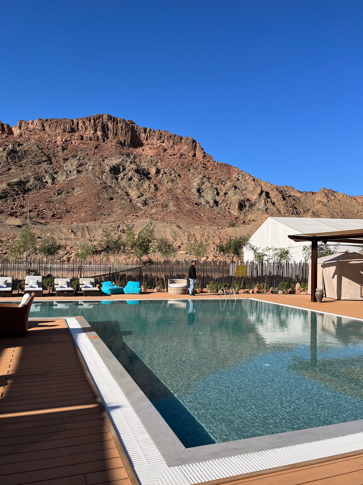
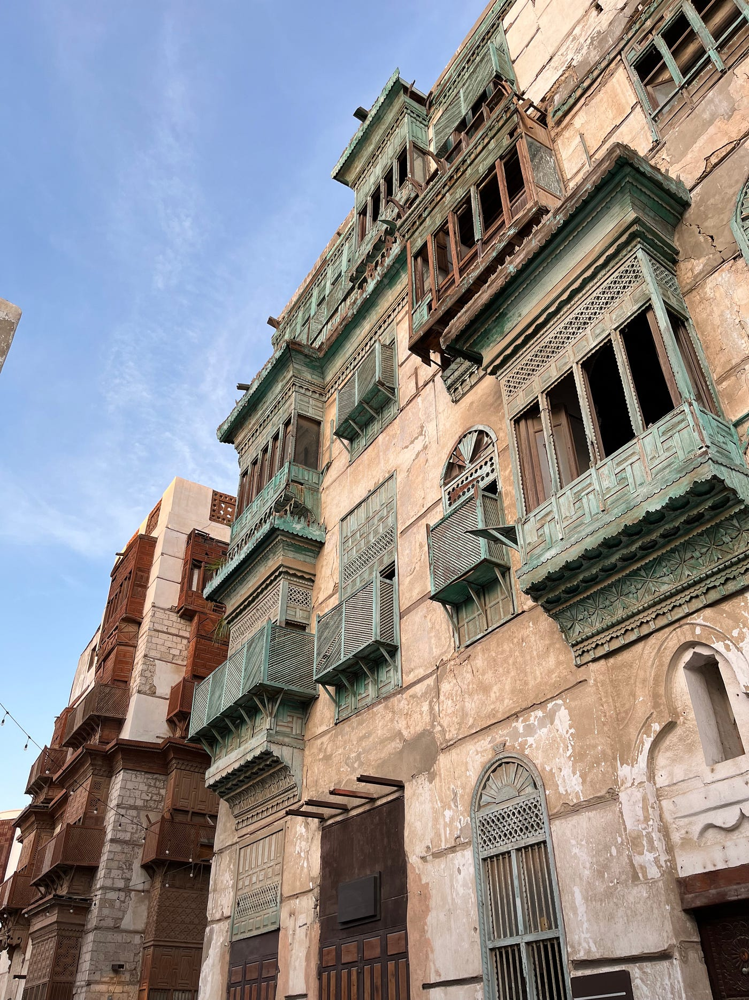
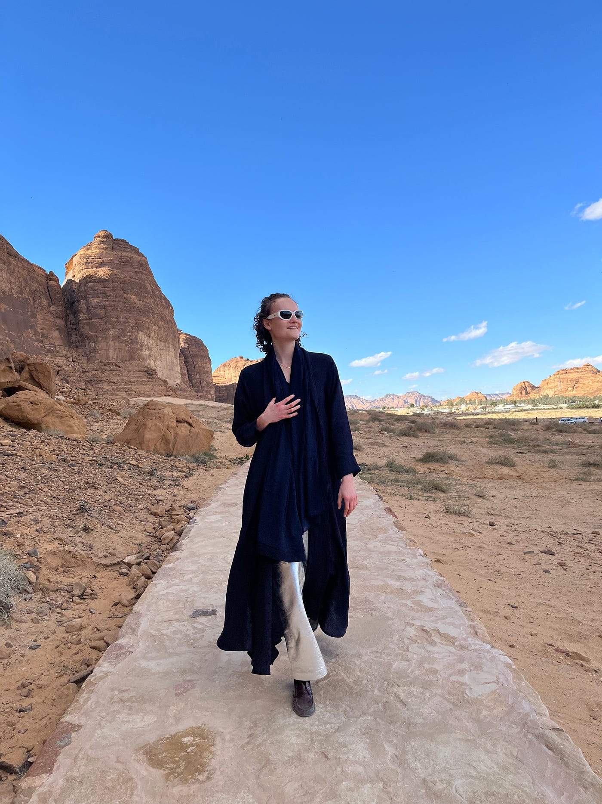
Ambition
It is important to note that there is a lot of action. The country is making extremely fast, bold moves. They’ve set deadlines for themselves, uphold high standards of work, and are relentlessly pursuing their goals. Ambition is king. This is truly, truly impressive.
However, I did also get a feeling that there lacks depth. I keep being reminded of the midwit meme, where the most brilliant ideas are usually so simple that an amateur and an expert will do the same thing — here it sometimes feels on the less experienced end of the spectrum.
But, not having expertise isn’t necessarily a deterrent. They have so much money, it’s crazy. It’s like giving an eighteen-year-old a billion dollars: if they’re smart enough, something good can come of it, even with significant room for error.
Showmanship
One focus of investment in Saudi is appearance. We were constantly videoed, photographed, showcased. We were given many gifts, wined and dined, taken care of. At many places we visited, they had an ostentatious display of fancy technology and abundant materials to work with.
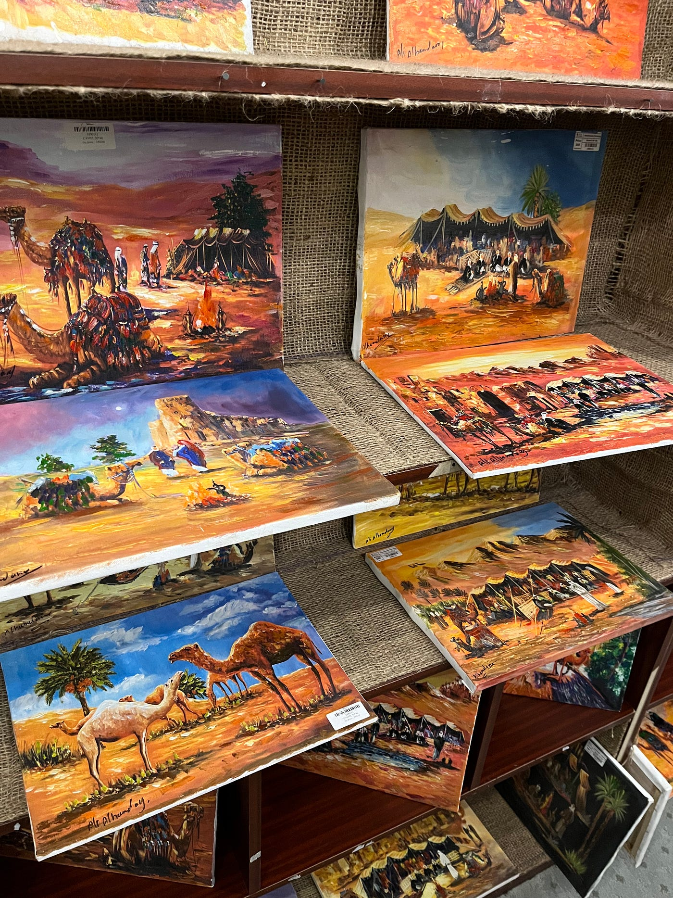
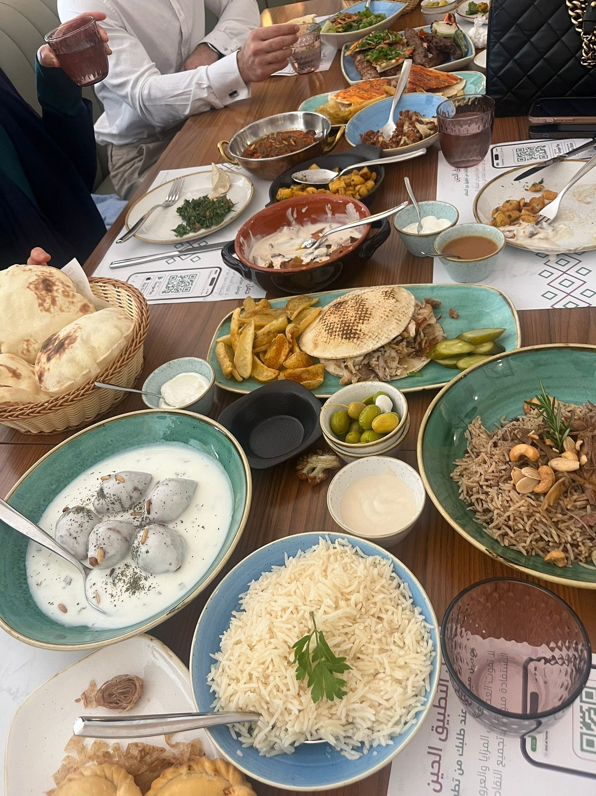
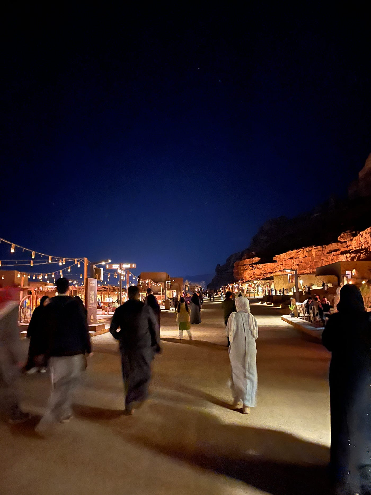
This is understandable: they are trying to make an impression, not just on us but on the world. Plus, they are conscious that there are so many misconceptions about their country that they want to disprove. We forget that stereotypes are insulting and upsetting to everyone. KSA is no different.
The other side to this is that hospitality is an integral part of Saudi culture. There are parts of the country that will literally remove their doors so as to remove all friction for any stranger looking for food or shelter. I’ve never heard of anything like it. And while sometimes focusing too much on appearance takes away from actually being the best, I believe properly welcoming someone into your home is a must.
A Unified Nation
As a closing note, I was extremely impressed by how much the Saudi people LOVE their government.
From a perspective of trying to do the best for its citizens, I have yet to see a country more successful than Saudi Arabia. Of course, take what I’m saying with a grain of salt: we were toured around, and our experience was very limited to what they wanted to show us. Still, the sense of pride that I got from every single citizen was palpable.
It was also clear that the country’s stance is very selfish. This is not necessarily negative, it just means that bringing in foreign talent, investing so much into research, a positive neutrality political strategy, building new infrastructure, etc. is all with the goal of furthering themselves and their interests, fulfilling a government’s job to take care of its people.
Finally, in startups, focus is paramount: everything should go back to your North Star. For Saudi Arabia, Vision 2030 is the North Star, and its prioritization is incredible. Every single person in the country, of all ages and backgrounds, knows that this is where the country is headed and that they are a part of it.
KSA has managed to organize and mobilize a nation-wide movement, making them a force to be reckoned with.
Final Thoughts
It is important to note that my experience was very much limited to what I was being shown. KSA has significant issues with migrant worker rights, the LGBTQ+ community and practicing religions other than Islam, for example. This piece reflects my opinion based on what I saw, which was definitely not the full picture.
I want to also emphasize how much I loved the other students also doing Gateway — such thoughtful, caring, high-caliber people that I will be staying in touch with for years to come.
Overall, this trip was a blessing, and if you’re even remotely curious about it, definitely apply!